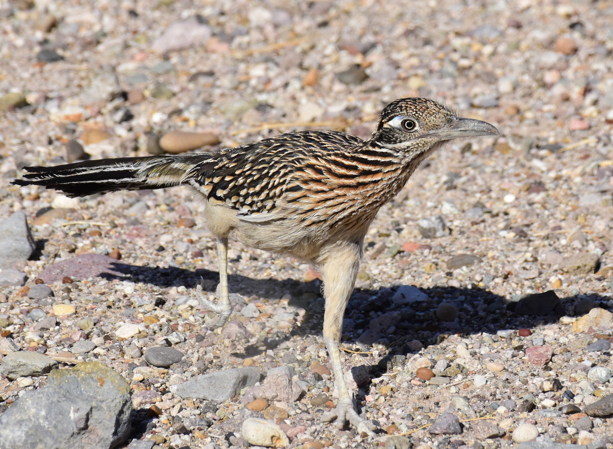
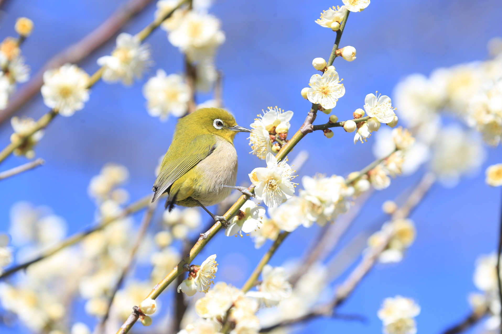
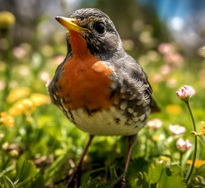
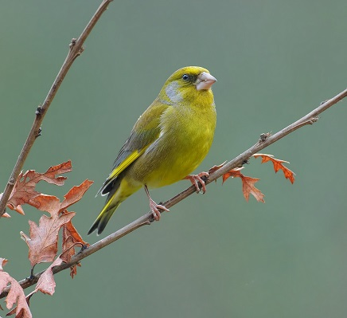
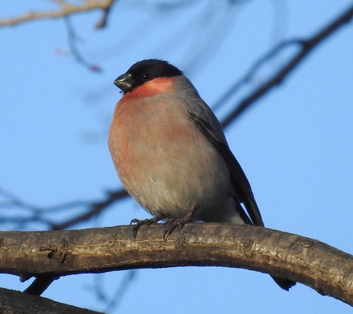
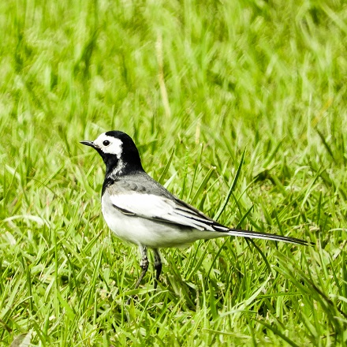
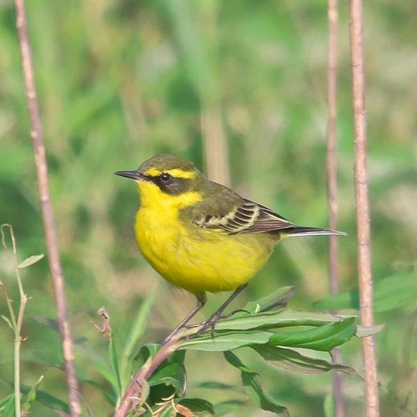

分類階級は、綱である。
飛行を得意とした動物である。現生鳥類 (Modern birds) はくちばしを持つ卵生の脊椎動物であり、一般的には（つまり以下の項目は当てはまらない種や齢が現生する）体表が羽毛で覆われた恒温動物で、歯はなく、前肢が翼になって、飛翔のための適応が顕著であり、二足歩行を行う[4]。後述の通り、本綱を爬虫類竜盤目獣脚亜目に分類し、綱および目を廃止するとする説もある

オオミチバシリ。カッコウ目カッコウ科アメリカジカッコウ亜科ミチバシリ属に分類される鳥。英名からロードランナーとも呼ばれる。

メジロ。鳥綱スズメ目メジロ科メジロ属に分類される鳥類。全長約12 cmで、スズメよりも小さい。翼開長は約18 cm。緑がかった背と暗褐色の羽を持ち、雌雄同色。目の周囲の白色部（アイリング）が、和名の由来になっている。漢字表記の繍眼児は漢語に由来し、目の周囲に刺繍されたような羽毛がある児（小さいもの）の意とする説もある[5]。室町時代からメジロの名で知られている。
アトリ科

アトリ
全長16cm。黄褐色を基調に黒、白を加えた羽色をもち、特に胸部の羽毛は橙褐色で目立つ。オスの夏羽は頭部が黒い。メスおよびオスの冬羽の頭部は褐色であり、メスはオスより色が薄い。

カワラヒワ
体長は約 14cm 、翼開長約24cmでスズメと同大だがやや小さい。全体的に黄褐色で、太い嘴と、翼（初列風切と次列風切）に混じる黄色が特徴的である。

ウソ
長は15-16 cm、翼開長は約26 cm。体重は21-34g。体はスズメよりやや大きく、頭の上と尾、翼の大部分は黒色、背中は灰青色。くちばしは太く短く黒い。雄の頬、喉は淡桃色をしているが、雌にはこの淡桃色の部分はない。雄は照鷽（てりうそ）、雌は雨鷽（あめうそ）と呼ばれる。
セキレイ科

体長21cm ほどで、ムクドリよりやや小さめで細身。他のタイリクハクセキレイ亜種より大型になる。頭から肩、背にかけて、雄の夏羽では黒色、雄の冬羽と雌では灰色。 腹部は白色で、胸部に黒くなるのが特徴的である。胸部の黒の面積は雄の方が雌より大きい。 顔は白く、黒い過眼線が入る。セグロセキレイと類似するが、本種は眼下部が白いことで判別できる。 嘴と脚は黒。 幼鳥は、頭～背中が灰色、顔はやや黄色がかっており、腹は白、胸部の黒い部分は薄くまだら。尾羽は長めで、セグロセキレイやキセキレイと同様、尾羽を上下に振る姿が特徴的である。 波を描くように飛翔する。

全長16.5cm。体重20-35g。尾羽はやや長い。上嘴の色彩は黒く、下嘴の色彩は上嘴より淡いかピンク色を帯びる。後肢の色彩は黒い。夏羽は胴体背面が緑褐色、腹面は黄色の羽毛で覆われる。種小名flavaは「黄色の」の意で、英名（yellow=黄色）と同義。冬羽は背面が緑みがかった暗褐色、腹面が淡黄色の羽毛で覆われる。幼鳥は背面が緑褐色、腹面が黄褐色の羽毛で覆われる。眼上部の眉状の斑紋（眉斑）や嘴基部から頸部にかけて入る斑紋（顎線）は黄褐色。